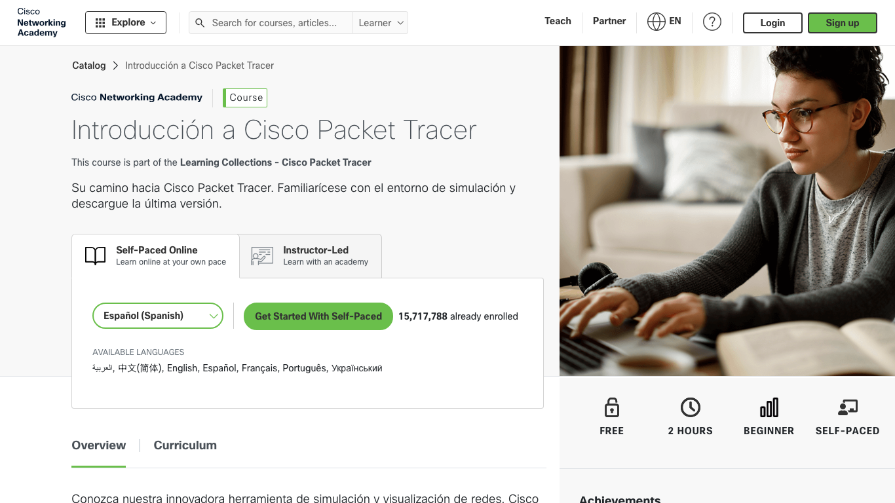
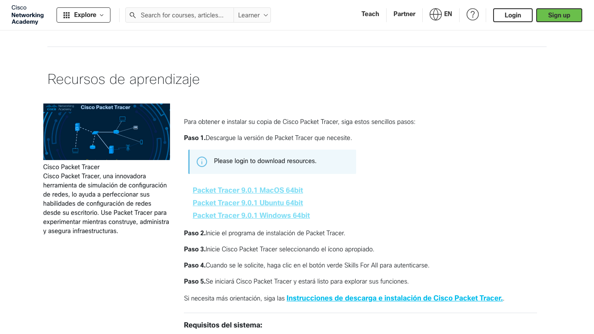
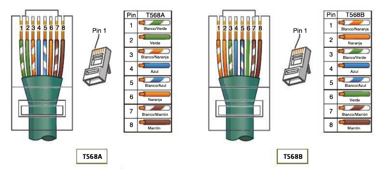
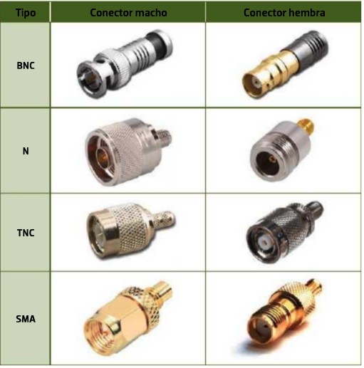
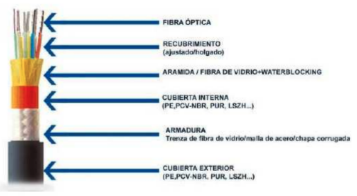
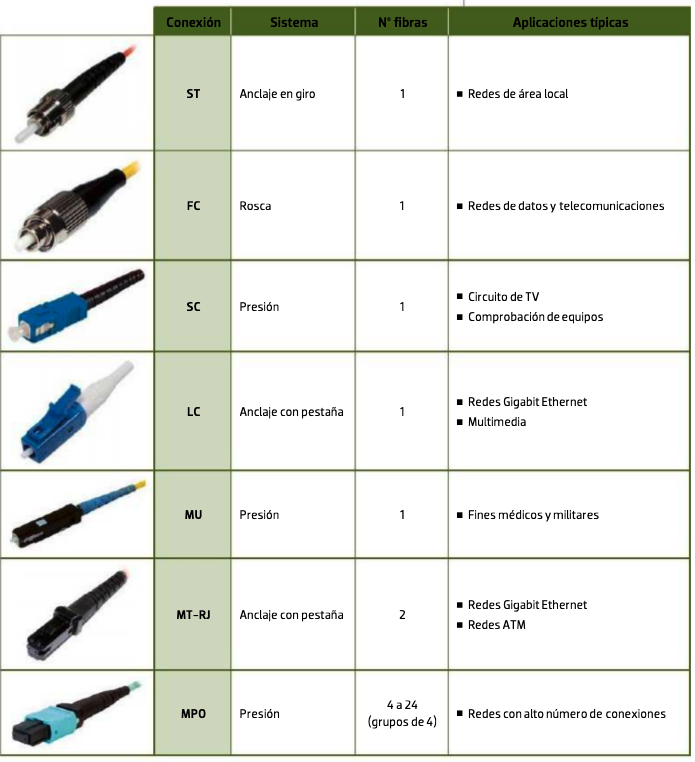
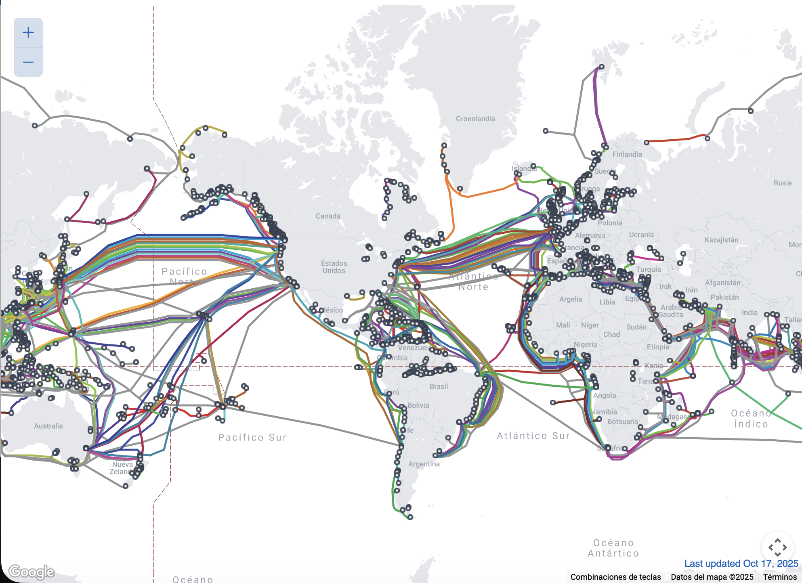
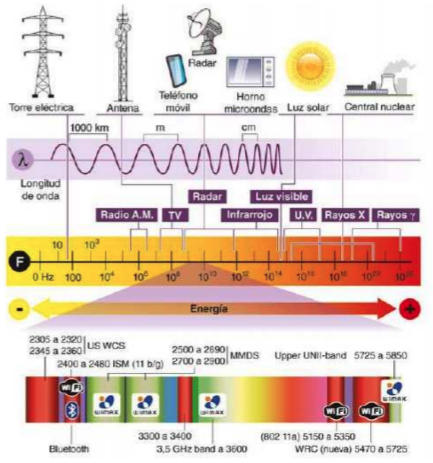

Redes de área local¶
Apuntes y organización del módulo 0225 — Redes de área local del CFGM de Sistemas Microinformáticos y Redes (SMR), conforme al Real Decreto 1691/2007, impartido en el IES Macià Abela de Crevillent.
Curso 2026-2027. En este sitio encontrarás la planificación del módulo y los temas que vayamos publicando a lo largo del curso.
Competencias profesionales¶
Las competencias profesionales asociadas al módulo:
- (d) Replantear el cableado y la electrónica de redes locales en pequeños entornos y su conexión con redes de área extensa canalizando a un nivel superior los supuestos que así lo requieran.
- (e) Instalar y configurar redes locales cableadas, inalámbricas o mixtas y su conexión a redes públicas, asegurando su funcionamiento en condiciones de calidad y seguridad.
- (f) Instalar, configurar y mantener servicios multiusuario, aplicaciones y dispositivos compartidos en un entorno de red local, atendiendo a las necesidades y requerimientos especificados.
- (g) Realizar las pruebas funcionales en sistemas microinformáticos y redes locales, localizando y diagnosticando disfunciones, para comprobar y ajustar su funcionamiento.
- (h) Mantener sistemas microinformáticos y redes locales, sustituyendo, actualizando y ajustando sus componentes, para asegurar el rendimiento del sistema en condiciones de calidad y seguridad.
Objetivos generales¶
- (d) Representar la posición de los equipos, líneas de transmisión y demás elementos de una red local, analizando la morfología, condiciones y características del despliegue, para replantear el cableado y la electrónica de la red.
- (e) Ubicar y fijar equipos, líneas, canalizaciones y demás elementos de una red local cableada, inalámbrica o mixta, aplicando procedimientos de montaje y protocolos de calidad y seguridad, para instalar y configurar redes locales.
- (f) Interconectar equipos informáticos, dispositivos de red local y de conexión con redes de área extensa, ejecutando los procedimientos para instalar y configurar redes locales.
- (g) Localizar y reparar averías y disfunciones en los componentes físicos y lógicos para mantener sistemas microinformáticos y redes locales.
- (h) Sustituir y ajustar componentes físicos y lógicos para mantener sistemas microinformáticos y redes locales.
Resultados de aprendizaje¶
| Código | Descripción | Peso (%) |
|---|---|---|
| RA1 | Reconoce la estructura de redes locales cableadas analizando las características de entornos de aplicación y describiendo la funcionalidad de sus componentes. | 20 |
| RA2 | Despliega el cableado de una red local interpretando especificaciones y aplicando técnicas de montaje. | 12 |
| RA3 | Interconecta equipos en redes locales cableadas describiendo estándares de cableado y aplicando técnicas de montaje de conectores. | 18 |
| RA4 | Instala equipos en red, describiendo sus prestaciones y aplicando técnicas de montaje. | 25 |
| RA5 | Mantiene una red local interpretando recomendaciones de los fabricantes de hardware o software y estableciendo la relación entre disfunciones y sus causas. | 15 |
| RA6 | Cumple las normas de prevención de riesgos laborales y de protección ambiental, identificando los riesgos asociados, las medidas y equipos para prevenirlos. | 10 |
Pesos en la nota
Los seis resultados de aprendizaje (RA) suman 100 %: 20 / 12 / 18 / 25 / 15 / 10. Cada RA aporta ese porcentaje a la nota final del módulo (ver Evaluación).
Carga horaria¶
Horas del módulo
| Concepto | Horas |
|---|---|
| Total módulo | 233 h |
| Formación en el centro | 133 h |
| Formación en empresa (FE) | 100 h |
La fecha de la formación en empresa se comunicará cuando esté fijada. Mientras tanto, organizamos el curso sobre las 133 h en el centro.
Temas del curso¶
| Tema | Título | Qué trabajamos | Estado | RA principales |
|---|---|---|---|---|
| 1 | Introducción. Arquitectura de redes | Tipos de redes, componentes, topologías, modelos OSI y TCP/IP | Publicado | RA1 |
| 2 | Medios de transmisión y capa física | Par trenzado, fibra, Wi‑Fi básico y conectores | Publicado | RA2, RA3 |
| 3 | Cableado estructurado y componentes | Racks, paneles, electrónica de red, WLAN/NetAcad | Se publicará cuando toque | RA2, RA3, RA4 |
| 4 | Capa de enlace | Tramas, direcciones MAC, switches y dominios de colisión/difusión | Se publicará cuando toque | RA1, RA4 |
| 5 | Capa de red | IPv4, máscaras, CIDR, ARP, ICMP y DHCP | Se publicará cuando toque | RA1, RA4 |
| 6 | Enrutamiento, subnetting y VLANs | Subnetting, supernetting, rutas estáticas, VLANs y NetAcad | Se publicará cuando toque | RA3, RA4 |
| 7 | Capa de transporte | Puertos, TCP/UDP y herramientas básicas | Se publicará cuando toque | RA4, RA5 |
| 8 | NAT e IPv6 | Traducción de direcciones (NAT/PAT) e introducción a IPv6 | Se publicará cuando toque | RA4, RA5 |
| 9 | Servicios, diagnóstico y protección | Servicios de aplicación, diagnóstico de averías, protección y PRL | Se publicará cuando toque | RA5, RA6 |
Mapa tema × RA¶
| Temas | RA1 | RA2 | RA3 | RA4 | RA5 | RA6 |
|---|---|---|---|---|---|---|
| 1. Introducción. Arquitectura de redes | X | |||||
| 2. Medios y capa física | X | X | ||||
| 3. Cableado estructurado y componentes | X | X | X | |||
| 4. Capa de enlace | X | X | ||||
| 5. Capa de red | X | X | ||||
| 6. Enrutamiento, subnetting y VLANs | X | X | ||||
| 7. Capa de transporte | X | X | ||||
| 8. NAT e IPv6 | X | X | ||||
| 9. Servicios, diagnóstico y protección | X | X | ||||
| Peso | 20 % | 12 % | 18 % | 25 % | 15 % | 10 % |
timeline
title Planificación temporal — RAL 2026-27 (orientativa)
section 1ª Evaluación — sep–nov
Fundamentos : T1 Introducción y arquitectura : T2 Medios y capa física : T3 Cableado y WLAN
section 2ª Evaluación — nov–ene
Núcleo LAN : T4 Capa de enlace : T5 Capa de red : T6 Enrutamiento VLAN y NetAcad
section 3ª Evaluación — ene–feb
Servicios y cierre : T7 Transporte : T8 NAT e IPv6 : T9 Diagnóstico y protecciónNúcleo del curso
Enlace, direccionamiento IP, subnetting y VLANs concentran una parte importante de la evaluación (sobre todo en la 2.ª evaluación). El Tema 9 cierra el curso en el centro con diagnóstico (RA5) y prevención de riesgos (RA6). Tenemos 7 sesiones por semana (55 minutos cada una).
Evaluación¶
La evaluación se organiza por resultados de aprendizaje (RA). Cada actividad indica qué RA trabaja. Los RA no se compensan entre sí: hay que superar cada uno.
Cómo se calcula la nota («quesitos»)¶
Imagina la nota del módulo como una tarta repartida en seis quesitos (los RA). Cada quesito tiene un tamaño fijo (el peso de la tabla de arriba: 20 %, 12 %, 18 %, 25 %, 15 % y 10 %).
- En cada RA, tu nota es la media ponderada de las actividades de ese RA (AC, PR, PY, PO).
- La nota final del módulo es la suma de (nota de cada RA × su peso).
- Si cumples el criterio de NetAcad / CCNA publicado en Aules, puedes sumar +1 punto sobre esa nota final. Ese +1 no sustituye ningún RA.
flowchart TB
A["Paso 1 — Instrumentos\nAC · PR · PY · PO"]
B["Paso 2 — Nota de cada RA\nmedia de las actividades de ese RA"]
C["Paso 3 — Nota final del módulo\nRA1×20% + RA2×12% + RA3×18%\n+ RA4×25% + RA5×15% + RA6×10%"]
D["+1 NetAcad / CCNA\nsi se concede en Aules"]
A --> B --> C
D -.-> CEjemplo (simplificado): si en RA4 tienes prácticas y un examen, se promedian (según lo que se indique en Aules) y ese resultado cuenta un 25 % de la nota del módulo. Suspender un RA no se compensa con otro.
Peso de cada RA¶
pie showData
title Peso de cada RA en la nota del módulo
"RA1 — Estructura LAN" : 20
"RA2 — Despliegue cableado" : 12
"RA3 — Interconexión" : 18
"RA4 — Instalación equipos" : 25
"RA5 — Mantenimiento / diagnóstico" : 15
"RA6 — PRL y medio ambiente" : 10Instrumentos de evaluación (IE)¶
| Instrumento | Icono | Descripción | Escala |
|---|---|---|---|
| Actividad de clase | AC | Microevidencia de aula | 0–1 |
| Práctica | PR | Práctica / simulación / laboratorio / NetAcad | 0–10 |
| Proyecto | PY | Entregable mayor con rúbrica | 0–30 |
| Prueba objetiva | PO | Examen escrito o en ordenador | 0–100 |
| NetAcad / CCNA | +1 | Aprovechamiento de la class NetAcad (según Aules) | +1 en la nota final |
Resumen:
- Las calificaciones se publican en Aules.
- Cada actividad indica el RA que evalúa y su escala. Codificación: prefijo del IE + número de tema (ej.
AC102= actividad 02 del Tema 1;PR101= práctica 01 del Tema 1). - Cisco NetAcad: prácticas como PR303 (WLAN) y PR603 (VLAN/enrutamiento) forman parte del itinerario. Si cumples lo publicado en Aules, puedes obtener el +1 en la nota final. La práctica opcional PR102 (Tema 1) también suma para el +1 si la defiendes en la auditoría.
- Las entregas en Aules son obligatorias en Markdown (
.md). No se aceptan PDF.
Cómo empezar con Markdown y VS Code
- Guía de Markdown: tutorialmarkdown.com/guia
- Documentación de Visual Studio Code: code.visualstudio.com/docs
Materiales¶
- Este sitio web de apuntes.
- Normas del taller — lectura obligatoria.
- Aules (entregas en
.mdy calificaciones). - Diagramas: Excalidraw, draw.io (diagrams.net) o Dia.
- Simulación: Cisco Packet Tracer.
- Formación NetAcad / CCNA (acceso según se indique en clase / Aules).
- Editor de entregas: Visual Studio Code + Markdown.
- Herramientas y cableado del taller (Temas 2–3 y Tema 9).
Contenidos publicados¶
| Página | Contenido |
|---|---|
| Inicio | Planificación del módulo |
| Normas del taller | Normas de uso del taller |
| Tema 1 | Introducción. Arquitectura de redes |
| Tema 2 | Medios de transmisión y capa física |
Los Temas 1 y 2 ya están publicados. Los Temas 3–9 se irán publicando en la navegación cuando toque trabajarlos en clase.
Normas del taller¶
Normas de uso del taller de SMR del IES Macià Abela.
1. Material y puesto asignado¶
- Eres responsable del material de tu puesto. Revísalo al inicio y al final de cada clase.
- Comunica de inmediato cualquier falta o avería al profesor.
- No intercambies herramientas entre puestos ni saques material del taller sin autorización.
2. Caja de herramientas¶
- Revisión obligatoria al entrar y al salir: número y estado de las herramientas.
- Cada herramienta en su sitio; caja cerrada al terminar.
- No usar herramientas de otros puestos.
3. Uso del equipo¶
- No modificar BIOS, particiones, cuentas ni configuraciones de red sin autorización.
- No instalar ni desinstalar software sin permiso del profesor.
- Apagar correctamente equipos, switches y routers al finalizar.
- Uso solo académico: prohibido jugar, redes sociales o software no autorizado.
4. Orden y limpieza¶
- Puesto limpio y ordenado: sin mochilas ni objetos personales sobre la mesa.
- Cableado recogido y ordenado; no pisar cables ni dejarlos sueltos.
- Al terminar: herramientas guardadas, rack cerrado, dispositivos apagados.
5. Comportamiento¶
- Puntualidad obligatoria.
- Prohibido comer o beber en el taller.
- Prohibido el uso del móvil salvo autorización expresa del profesor.
- No entra nadie ajeno al grupo autorizado.
6. Montaje de equipos (cuando aplique)¶
- Usar guantes antiestáticos ESD al manipular componentes.
- Desconectar siempre la alimentación antes de abrir la carcasa.
- No tocar conectores dorados ni circuitos; sujetar placas por los bordes.
- No forzar conectores; en caso de duda, avisar al profesor.
- Residuos electrónicos (RAEE) al contenedor indicado, no a la papelera.
7. Redes (cuando aplique)¶
- Usar solo cable y conectores proporcionados o autorizados.
- No modificar configuración de switches/routers sin autorización.
- Apagar dispositivos de red de forma ordenada al finalizar.
8. Seguridad¶
- No manipular conexiones eléctricas ni regletas sin autorización.
- Ante anomalía (olor, calor, chispas, humo): desconectar y avisar al profesor.
- Cualquier accidente o incidencia se comunica de inmediato al profesor.
El incumplimiento puede suponer medidas del Reglamento de Régimen Interno. Daños o pérdidas por uso indebido pueden requerir reposición.
Guías
Cisco Packet Tracer — guía inicial¶
0. Qué es Packet Tracer y qué vas a necesitar¶
Packet Tracer es el simulador de redes de Cisco: montas topologías, configuras equipos y observas el tráfico sin cablear un rack. Es gratuito, pero para descargarlo y para abrirlo hace falta una cuenta en Cisco Networking Academy (NetAcad).
Requisitos del equipo
- Windows 11, macOS 12 o posterior, o Ubuntu 22.04 / 24.04.
- Procesador de 64 bits (amd64), unos 4 GB de RAM libres y 1,4 GB de disco.
- No existe versión para móvil ni tableta.
Tu correo: el de la identidad digital GVA, con dominio @alu.edu.gva.es. Con ese correo creas la cuenta NetAcad y entras en Packet Tracer.
1. Crear tu cuenta NetAcad¶
Entra en netacad.com y crea la cuenta tú mismo con tu correo @alu.edu.gva.es. El alta es libre: no necesitas código ni acceso previo del centro. Usa siempre ese correo; no uses Gmail ni otro correo personal.
Pulsa Inscríbase (o Sign up), confirma el correo si te lo pide y guarda usuario y contraseña en un sitio seguro.
2. Matricularte en «Getting Started with Cisco Packet Tracer»¶
El curso gratuito Getting Started with Cisco Packet Tracer (unas 2 horas) es el camino oficial para acceder a la descarga. Ábrelo aquí:
https://www.netacad.com/courses/getting-started-cisco-packet-tracer
En español verás el título Introducción a Cisco Packet Tracer. Elige el idioma y pulsa el botón para empezar (por ejemplo Get Started With Self-Paced).

En el taller no hace falta terminar el curso entero para abrir Packet Tracer si ya está instalado; en casa sí necesitas esta matrícula (y la sesión iniciada) para poder descargar el instalador.
3. Descargar Packet Tracer¶
Ve al Resource Hub de descargas:
https://www.netacad.com/resources/lab-downloads
Sin sesión iniciada aparece el aviso Please login to download resources (o similar en español) y no puedes descargar. Inicia sesión en NetAcad y vuelve a esta página. Elige la versión de tu sistema (Windows, Ubuntu o macOS). La versión que veas hoy puede cambiar; descarga la que ofrezca NetAcad en ese momento.

Los pasos 2 y 3 solo hacen falta para instalar Packet Tracer en tu ordenador de casa. En el aula ya está instalado: pasa al apartado 5.
4. Instalar¶
En los ordenadores del taller Packet Tracer ya está instalado. No hace falta descargar ni instalar nada: abre el programa e inicia sesión (apartado 5).
- Ejecuta el instalador que has descargado.
- Acepta la licencia y pulsa Siguiente hasta terminar.
- Deja marcada la opción de abrir Packet Tracer al acabar, si aparece.
- Si Windows muestra el aviso del cortafuegos, permite el acceso en redes privadas.
En la carpeta de descargas:
sudo apt install ./CiscoPacketTracer_XXX_Ubuntu_64bit.deb
Sustituye XXX por la versión del archivo que hayas bajado. Acepta la licencia. Ábrelo desde el menú de aplicaciones o con el comando packettracer.
5. Primer inicio de sesión dentro de Packet Tracer¶
Al abrir Packet Tracer aparece la ventana de inicio de sesión. Pulsa el botón de login (según la versión pone Login o Skills For All): se abre el navegador.
- Si ya tenías la sesión de NetAcad abierta, verás un mensaje del tipo You have successfully logged in to Cisco Packet Tracer: cierra esa pestaña y vuelve al programa.
- Si no, entra con tu cuenta GVA (
@alu.edu.gva.es).
Marca Keep me logged in solo en tu ordenador personal. En el del aula, no: son equipos compartidos.
6. Abrir, guardar y entregar un .pkt¶
- Abrir: Archivo > Abrir (File > Open) o doble clic en un
.pktdescargado de Aules. - Guardar: Archivo > Guardar como (File > Save As) con el nombre que pida la práctica (por ejemplo
PR1XX.pkt).
.pkt es una red normal que montas o modificas. .pka es una actividad con ventana de instrucciones y porcentaje de completado.
Cuando la práctica lo pida, sube a Aules el .pkt junto al informe en Markdown (.md).
7. Problemas frecuentes¶
| Síntoma | Qué hacer |
|---|---|
| No veo los botones o enlaces de descarga | No has iniciado sesión en netacad.com. Entra y recarga la página de descargas. |
| El login de Packet Tracer se queda cargando | Entra antes en NetAcad desde el navegador y vuelve a intentarlo. Prueba con Chrome o borra la caché de los sitios de Cisco. |
| No me llega el correo de confirmación de NetAcad | Mira en correo no deseado de tu cuenta GVA. |
Un .pkt no abre o avisa de la versión |
Se guardó con una versión más nueva; actualiza Packet Tracer desde el Resource Hub. |
| Aviso del cortafuegos de Windows | Permitir el acceso en redes privadas. |
| Quiero instalarlo en el móvil o en la tableta | No existe esa versión. |
8. Vídeo de apoyo¶
Pablo Hidalgo enseña en 7 minutos cómo crear la cuenta, descargar Packet Tracer, instalarlo e iniciar sesión. Cuando propone entrar con Google, tú usa tu cuenta @alu.edu.gva.es.
9. Comprobación¶
- Cuenta GVA (
@alu.edu.gva.es) creada en NetAcad - Sesión iniciada dentro de Packet Tracer
- Un
.pktguardado con el nombre de la práctica - En casa (opcional): matrícula en Getting Started y Packet Tracer instalado
Cuando termines, vuelve a las actividades del Tema 1.
PR102 — Modelos OSI y TCP/IP en Packet Tracer¶
Práctica opcional
PR102 es voluntaria. Trabaja conceptos (puertos, DNS, ARP, TCP) que veremos en profundidad en temas posteriores, así que es normal que ahora te cueste. Si la entregas, suma para el +1 de la nota final, pero solo cuenta si la defiendes en una auditoría: una comprobación oral en la que explicas lo que has hecho, cuando el profesor lo indique.
Enunciado corto y rúbrica en el Tema 1.
Objetivos¶
- Relacionar capas OSI y TCP/IP con lo que muestra Packet Tracer.
- Observar encapsulación en una petición web (HTTP sobre TCP/IP/Ethernet).
- Identificar tráfico DNS, ARP y TCP además de HTTP.
Requisitos¶
- Guía inicial Packet Tracer (instalación e interfaz).
- Cisco Packet Tracer instalado.
- Topología
.pktde Aules o la mini-topología de la sección siguiente.
Si no tienes el archivo¶
Monta una LAN mínima:
- 1× PC (cliente), 1× Server-PT, 1× Switch 2960.
- Cables rectos PC—switch y server—switch.
- En el servidor: IP
192.168.1.254/24, servicio HTTP y DNS activos; registro Awww.osi.local→192.168.1.254. - En el PC: IP
192.168.1.10/24, DNS192.168.1.254, sin puerta de enlace (todo está en la misma LAN).
Parte 1 — Tráfico HTTP¶
- Abre la topología. Pasa a modo Simulación.
- Editar filtros → desactiva todo y deja solo HTTP.
- En el PC → Escritorio → Navegador web → URL
www.osi.local→ Ir. - Pulsa Capturar/Avanzar varias veces hasta ver eventos HTTP.
- Abre el primer evento HTTP → pestaña Modelo OSI: - Capa 7: petición HTTP al servidor. - Capa 4: puerto destino 80. - Capa 3: IP destino del servidor. - Capa 2: MAC origen/destino.
- En Detalles PDU: anota IP origen/destino, puertos TCP y host HTTP.
Parte 2 — DNS, ARP y TCP¶
- En filtros, Mostrar todo (o activa DNS, ARP, TCP, HTTP).
- Localiza un evento DNS (consulta del nombre) y la respuesta (IP resuelta).
- Localiza ARP si aparece (resolución MAC).
- Localiza eventos TCP (apertura / ESTABLISHED / cierre).
Qué entregar (PR102.md + capturas)¶
En el .md:
- Captura modo Simulación con eventos visibles (HTTP y al menos DNS o TCP).
- Tabla breve: capa (OSI o TCP/IP) | qué viste en esa capa en la PDU HTTP.
- Respuestas (una o dos frases cada una): - ¿Qué puerto escucha el servidor web para HTTP? - ¿Qué puerto usa DNS? - En la respuesta del servidor, ¿qué se intercambia respecto a IP/MAC/puertos?
- (Opcional) Archivo
.pktsi lo modificasteis.
Valoración: rúbrica del Tema 1. Solo suma para el +1 si la defiendes en la auditoría.
PR103 — Mi primera red en Packet Tracer¶
Enunciado corto y rúbrica en el Tema 1.
Vas a montar tu primera red local: un switch y cuatro ordenadores, les das dirección IP y compruebas que se comunican. No partimos de un archivo .pkt del profesor: lo construyes tú desde cero. Antes necesitas Packet Tracer con la sesión iniciada; si aún no lo tienes listo, sigue la guía inicial.
Vídeo 1 — Paso a paso¶
Mira del 1:23 al 10:04. Él monta dos PC; tú montarás cuatro, con el mismo método.
Avisos sobre el vídeo
En el vídeo pone la IP en Config > FastEthernet0. Aquí lo haces en Desktop > IP Configuration; el resultado es el mismo.
Deja puerta de enlace y DNS en blanco: sin router no hacen falta.
Si Packet Tracer o NetAcad te pide iniciar sesión, usa tu cuenta @alu.edu.gva.es, no Google.
Pasos¶
- Coloca un switch 2960 y cuatro PC (End Devices).
- Conéctalos con cable automático o directo: PC1 a Fa0/1, PC2 a Fa0/2, PC3 a Fa0/3, PC4 a Fa0/4.
- Cambia los nombres a PC1, PC2, PC3, PC4 y SW1 (pestaña Config > Display Name).
- Pon las IP en Desktop > IP Configuration, modo Static, según esta tabla:
| Equipo | Dirección IP | Máscara | Puerta de enlace |
|---|---|---|---|
| PC1 | 192.168.1.10 | 255.255.255.0 | (vacía) |
| PC2 | 192.168.1.11 | 255.255.255.0 | (vacía) |
| PC3 | 192.168.1.12 | 255.255.255.0 | (vacía) |
| PC4 | 192.168.1.13 | 255.255.255.0 | (vacía) |
- Espera a que los enlaces se pongan en verde. En PC1, Desktop > Command Prompt: escribe
ipconfigy despuésping 192.168.1.11,ping 192.168.1.12yping 192.168.1.13. - Pasa a modo Simulación. Mira solo del 9:50 al 14:00 del vídeo siguiente (lo de antes usa otro cableado y no lo necesitas). Deja el filtro solo en ICMP, envía una PDU simple de PC1 a PC4 y avanza paso a paso hasta que vuelva la respuesta.
- Guarda el archivo como
PR103.pkt(Archivo > Guardar como / File > Save As). Si dudas del menú, mira el apartado de abrir y guardar en la guía inicial.
Entrega en Aules¶
Sube PR103.pkt y PR103.md con:
- Captura del ping de PC1 a PC4 (solo la ventana Command Prompt).
- Captura del modo Simulación con la Event List.
- Respuestas a:
1. ¿Qué topología forman los equipos y qué hace el switch?
2. ¿Qué cable has usado y por qué?
3. (Opcional) Cambia la IP de PC4 a
192.168.2.13y vuelve a hacer ping desde PC1. ¿Qué pasa? ¿Por qué crees que ocurre?
Antes de entregar¶
- Packet Tracer con sesión iniciada
- Switch y cuatro PC cableados, enlaces en verde, nombres PC1–PC4 y SW1
- IP según la tabla (sin puerta de enlace)
- Ping de PC1 al resto
- PDU ICMP en Simulación de PC1 a PC4 (ida y vuelta)
-
PR103.pktyPR103.mdlistos para Aules
Tema 1. Introducción. Arquitectura de redes¶
En este tema construimos un mapa claro de qué es una LAN, qué dispositivos intervienen y por qué las comunicaciones se organizan en capas (modelos OSI y TCP/IP).
Primera clase
Empieza por el cuestionario inicial (preguntas 1–7). No hace falta estudiar el tema completo antes: el cuestionario sirve para ver qué sabes al empezar.
Propuesta didáctica¶
Trabajamos el RA1 del módulo Redes de área local (0225):
RA1. Reconoce la estructura de redes locales cableadas analizando las características de entornos de aplicación y describiendo la funcionalidad de sus componentes.
Criterios de evaluación (RA1)¶
- CE1a: Se han descrito los principios de funcionamiento de las redes locales.
- CE1b: Se han identificado los distintos tipos de redes.
- CE1c: Se han descrito los elementos de la red local y su función.
- CE1d: Se han identificado y clasificado los medios de transmisión.
- CE1e: Se ha reconocido el mapa físico de la red local.
- CE1f: Se han utilizado aplicaciones para representar el mapa físico de la red local.
- CE1g: Se han reconocido las distintas topologías de red.
- CE1h: Se han identificado estructuras alternativas.
Contenidos¶
- Sistemas en red: tipos, componentes y topologías.
- Clasificación por extensión (PAN, LAN, MAN, WAN) y por ámbito (pública / privada).
- Medios de transmisión (visión general) y perturbaciones habituales.
- Normalización: estándares y organismos.
- Arquitecturas por capas: modelo OSI y modelo TCP/IP; PDU y encapsulación.
- Esquemas LAN básicos (red simple, zonas, idea de DMZ).
Programación de aula (orientativa, ~18–20 h)¶
| Sesiones | Contenidos | Actividades |
|---|---|---|
| 1 | Presentación del módulo + normas del taller + cuestionario inicial | Cuestionario (1–7) |
| 2–3 | Componentes, tipos de redes, topologías | PR101 (diagrama: Excalidraw / draw.io / Dia) |
| 4 | Transmisión básica y perturbaciones (nivel SMR) | AC102 |
| 5–7 | Normalización, OSI / TCP-IP, encapsulación | AC103, AC104 |
| 8–9 | Esquemas LAN; primera red en PT | PR103; PR102 (opcional) |
Cuestionario inicial¶
Antes de empezar — responde con lo que sepas
- ¿Qué tipos de redes conoces según su extensión?
- ¿Qué diferencia hay entre una red pública y una privada?
- ¿Qué función tiene un switch en una red local?
- ¿Qué ventajas ofrece la fibra óptica frente al par trenzado?
- ¿Qué es una topología en estrella? ¿Dónde se suele usar?
- ¿Qué relación existe entre los nodos finales e intermedios?
- ¿Qué diferencia hay entre transmisión serie y paralela?
- ¿Qué es un modelo de red y para qué sirve?
- ¿Cuáles son las principales diferencias entre el modelo OSI y el modelo TCP/IP?
- ¿Qué diferencias hay entre conmutación y difusión en el uso del medio?
- ¿Qué es una DMZ y para qué se utiliza en una red local?
Soluciones
Las soluciones se trabajan en clase o se publican en Aules cuando proceda.
Sistemas en red¶
Un sistema de red es el conjunto de equipos electrónicos y medios de transmisión que permiten la comunicación entre terminales, a menudo situados en puntos remotos. La unión de estos sistemas forma las redes de comunicaciones.

Componentes hardware¶
Nodos finales (DTE)¶
Dispositivos que inician o terminan una comunicación: estaciones de trabajo, servidores, impresoras de red, etc.
Nodos intermedios (DCE)¶
Participan en la comunicación entre nodos finales:
| Dispositivo | Idea clave | Capa OSI habitual |
|---|---|---|
| Repetidor | Amplifica / regenera la señal | 1 (física) |
| Switch | Conecta equipos en la misma LAN; aprende MAC ↔ puerto | 2 (enlace) |
| Router | Conecta redes distintas; encaminamiento | 3 (red) |
| Firewall | Filtra tráfico según políticas de seguridad | varias |

Adaptador de red (NIC)¶
Permite conectar el equipo a la red. Se caracteriza por:
- Tipo de interfaz (cableada / inalámbrica).
- Modo de transmisión (half-dúplex / full-dúplex).
- Velocidad (Mbps / Gbps).

Medios de transmisión (visión general)¶
| Tipo | Ejemplos | Uso típico en LAN |
|---|---|---|
| Guiados | Par trenzado (UTP/FTP), fibra óptica, coaxial | Cableado de edificio; backbone |
| No guiados | Wi‑Fi, radioenlaces | Acceso inalámbrico en aulas / oficinas |
El detalle de categorías de cable, conectores y normativa se desarrolla en los Temas 2–3.
Componentes software¶
- NOS / pila de protocolos: software que gestiona la comunicación.
- Drivers: controladores del adaptador de red.
¿Qué es un protocolo?
Conjunto de reglas entre emisor y receptor que permiten transmitir datos de forma acordada. Ejemplo: el protocolo IP define el direccionamiento lógico.
Clasificación de redes¶
Según su extensión¶
- PAN: entorno personal (pocos metros). Ej.: Bluetooth, NFC.
- LAN: red local (empresa, aula, vivienda). Si es inalámbrica: WLAN.
- MAN: varias LAN en ámbito metropolitano.
- WAN: interconexión a gran distancia. Internet es un ejemplo de WAN.

Según su ámbito (titularidad)¶
- Públicas: servicio a usuarios que contratan (ISP).
- Privadas: propiedad de una organización o particular. Una VPN permite extender de forma segura una LAN sobre una red no controlada (p. ej. Internet).

Topologías¶
La topología describe la distribución espacial de los elementos conectados.
Cableadas¶
Hoy lo habitual en LAN es la estrella (y variantes en árbol / jerárquicas). El bus clásico está en desuso.

Inalámbricas¶
Despliegues basados en puntos de acceso Wi‑Fi (estrella inalámbrica, malla, etc.).

Transmisión y perturbaciones (mínimos SMR)¶
Transmisión: enviar datos de un punto a otro a través de un medio.
Perturbación: interferencia o degradación que puede alterar la señal.
Ideas que debes manejar¶
| Criterio | Opciones | Ejemplo |
|---|---|---|
| Naturaleza de la señal | Analógica / digital | Voz telefónica vs Ethernet |
| Cómo viajan los bits | Serie / paralelo | USB (serie) vs buses antiguos |
| Dirección | Símplex / half-dúplex / full-dúplex | TV; walkie-talkie; teléfono |


Perturbaciones habituales¶
- Atenuación: pérdida de potencia con la distancia.
- Ruido: señales no deseadas (térmico, impulsivo, diafonía…).
- Distorsión: deformación de la forma de la señal.
Fuera de alcance en este tema
Técnicas de codificación (NRZ, Manchester…) y modulación detallada (AM/FM/PM) no se desarrollan aquí; si hace falta, se retomarán como ampliación o en laboratorio.
Normalización¶
Al principio cada fabricante tenía su red. El problema era la incompatibilidad. La solución: estandarizar.

Organismos (visión general)¶
Entre otros: ISO, IEEE, ITU, IETF. Unos definen modelos de referencia; otros, estándares de cableado, Wi‑Fi, protocolos de Internet, etc.

Arquitecturas por capas¶
Diseñar una red implica resolver encaminamiento, direccionamiento, acceso al medio, control de errores, etc. La solución práctica es dividir el problema en capas.
Principios¶
- Cada capa se apoya en los servicios de la inferior.
- Capas homólogas se entienden mediante protocolos.
- Se puede cambiar un protocolo de una capa si se mantienen los servicios.
PDU y encapsulación¶
PDU (Protocol Data Unit): unidad de datos de una capa.
| Capa (TCP/IP) | Nombre habitual de la PDU |
|---|---|
| Aplicación | Datos |
| Transporte | Segmento (TCP) / datagrama (UDP) |
| Internet (red) | Paquete / datagrama IP |
| Acceso a la red | Trama |
| Física | Bits |
En el emisor, cada capa añade su cabecera (encapsulación). En el receptor, se eliminan en orden inverso.

Modelo OSI y modelo TCP/IP¶
OSI (7 capas)¶
- Física — medio y señales.
- Enlace — tramas, MAC, acceso al medio.
- Red — encaminamiento (IP…).
- Transporte — extremo a extremo (TCP/UDP…).
- Sesión — gestión de la sesión.
- Presentación — formato, cifrado, compresión.
- Aplicación — servicios al usuario (HTTP, SMTP…).
TCP/IP (4 capas)¶
- Acceso a la red ≈ física + enlace OSI.
- Internet ≈ red OSI (IP, ARP, ICMP…).
- Transporte (TCP, UDP).
- Aplicación ≈ sesión + presentación + aplicación OSI.
| Capa TCP/IP | Capas OSI | Función |
|---|---|---|
| Aplicación | 5–7 | Servicios al usuario |
| Transporte | 4 | Comunicación extremo a extremo |
| Internet | 3 | Encaminamiento y direccionamiento |
| Acceso a la red | 1–2 | Medio físico y tramas |

Uso del medio y esquemas LAN¶
Difusión vs conmutación¶
- Difusión (broadcast): el medio se comparte; todos pueden “oír” (más colisiones en medios compartidos clásicos).
- Conmutación: el tráfico se dirige hacia el destino (switches modernos reducen dominios de colisión).

Esquemas LAN¶
- LAN simple: PCs + switch (+ router hacia Internet).
- LAN por zonas: separar departamentos o servicios.
- DMZ: zona intermedia para servicios expuestos, con filtrado hacia la red interna.


Actividades¶
Formato de entrega
Las entregas en Aules son obligatorias en Markdown (.md). No se aceptan PDF.
Nombre del archivo: AC1XX.md o PR1XX.md (sustituye XX por el número). Respeta la fecha de vencimiento.
Escribiremos los .md con Visual Studio Code.
Cómo empezar
- Guía de Markdown: tutorialmarkdown.com/guia
- Documentación de Visual Studio Code: code.visualstudio.com/docs
PR101 — Mapa físico y lógico¶
-
PR101. (RA1 // CE1b, CE1c, CE1e, CE1f, CE1g, CE1h // PR 0–10). En grupo, diseñad el esquema de la empresa ficticia TechSolutions:
-
3 departamentos (Administración, Ventas, Soporte), cada uno con 5 PCs y 1 impresora.
- 1 servidor central.
- Conexión a Internet mediante router.
Tareas: elegir topología; dibujar el mapa en Excalidraw, draw.io o Dia (cualquiera de las tres); etiquetar medios (UTP, fibra, Wi‑Fi); justificar topología, medios y dispositivos; exposición breve (5 min).
Entrega: el diagrama (export PNG/SVG o el archivo del editor, según se indique en Aules) y el .md de la práctica (PR101.md).
| Criterio | Descripción | Puntos |
|---|---|---|
| Claridad del diagrama | Legible y organizado | 0–2 |
| Dispositivos | Todos los necesarios | 0–2 |
| Conexiones | Etiquetadas (UTP / fibra / Wi‑Fi) | 0–2 |
| Topología adecuada | Coherente con el escenario | 0–2 |
| Justificación técnica | Argumentación clara | 0–2 |
| Total | /10 |
AC102 — Transmisión y perturbaciones¶
- AC102. (RA1 // CE1a, CE1c, CE1d // AC 0–1). Busca ejemplos reales de: serie/paralelo, símplex/half/full-dúplex, y al menos dos perturbaciones. Para cada uno: dónde aparece, qué efecto tiene y qué solución se aplica o propondrías.
AC103 — Organismos de normalización¶
- AC103. (RA1 // CE1a, CE1c // AC 0–1). Tabla comparativa de organismos (ISO, IEEE, ITU, IETF…): función y algún estándar relevante.
AC104 — OSI vs TCP/IP¶
- AC104. (RA1 // CE1a, CE1g // AC 0–1). Esquema comparativo OSI / TCP-IP: capas, equivalencia, función y un ejemplo de protocolo por capa TCP/IP.
PR102 — Modelos en Packet Tracer¶
- PR102. (RA1 // CE1a, CE1c // Opcional · suma en el +1). En Packet Tracer, observad la encapsulación de una petición web (HTTP / TCP / IP / Ethernet) y el papel de DNS (y ARP si aparece). Es voluntaria y va más allá de lo que vemos en este tema: puertos, DNS, ARP y TCP se ven a fondo en temas posteriores. Suma para el +1 de la nota final solo si la defiendes en una auditoría oral cuando el profesor lo indique.
Antes: instalad PT con la guía inicial.
Guion: PR102 — Modelos OSI/TCP (también en Aules). Usa la topología .pkt de Aules o monta la mini-LAN del guion.
Entrega: PR102.md + capturas (simulación / PDU). Opcional: .pkt.
| Criterio | Descripción | Puntos |
|---|---|---|
| Simulación y filtros | Modo simulación; HTTP (y DNS/TCP) visibles | 0–2 |
| Lectura OSI / TCP-IP | Tabla capa ↔ qué viste en la PDU | 0–3 |
| Preguntas de repaso | Puerto HTTP, DNS, intercambio en la respuesta | 0–3 |
Claridad del .md |
Capturas con leyenda; sin datos personales | 0–2 |
| Total | /10 |
La rúbrica valora la práctica; solo cuenta para el +1 si la defiendes en la auditoría.
PR103 — Mi primera red en Packet Tracer¶
- PR103. Mi primera red en Packet Tracer (RA1 // CE1c, CE1d, CE1f, CE1g // PR 0–10). Montas desde cero una LAN con un switch y cuatro PC, les das IP y compruebas la conectividad con ping y con el modo Simulación.
Antes: guía inicial de Packet Tracer (sesión iniciada).
Guion: PR103 — Mi primera red (también en Aules). No hay .pkt de partida: lo construyes tú siguiendo el vídeo.
Entrega: PR103.pkt + PR103.md (capturas y respuestas).
| Criterio | Descripción | Puntos |
|---|---|---|
| Topología y cableado | switch y 4 PC, cable correcto, enlaces en verde, nombres PC1–PC4 y SW1 | 2 |
| Direccionamiento | IP y máscara según la tabla, en Desktop > IP Configuration, sin puerta de enlace | 2 |
| Conectividad | ping correcto de PC1 al resto, con captura | 2 |
| Simulación | PDU ICMP de PC1 a PC4 que llega y vuelve, con captura de la Event List | 2 |
| Entrega | .pkt que abre bien y .md claro, respuestas correctas, sin datos personales | 2 |
| Total | /10 |
Referencias rápidas¶
- Sitio del módulo: fjavier-hernandez.github.io/ral
- Diagramas: Excalidraw, draw.io (diagrams.net), Dia
- Simulación: Cisco Packet Tracer
- Entregas: Visual Studio Code + Markdown
- Normas: Normas del taller
Tema 2. Medios de transmisión y capa física¶
En este tema bajamos a la capa física: qué medio usamos, qué categoría de cable, cómo se termina un RJ‑45 y cuándo conviene cobre, fibra o radio.
Primera clase
Empieza por el cuestionario inicial. No hace falta estudiar el tema completo antes: el cuestionario sirve para ver qué sabes al empezar.
Propuesta didáctica¶
Trabajamos los RA2 y RA3 del módulo Redes de área local (0225):
RA2. Despliega el cableado de una red local interpretando especificaciones y aplicando técnicas de montaje.
RA3. Interconecta equipos en redes locales cableadas describiendo estándares de cableado y aplicando técnicas de montaje de conectores.
Criterios de evaluación (selección)¶
RA2
- CE2a: Se han reconocido los principios funcionales de las redes locales.
- CE2b: Se han identificado los distintos tipos de redes.
- CE2c: Se han diferenciado los medios de transmisión.
- CE2d: Se han reconocido los detalles del cableado de la instalación y su despliegue (categoría del cableado, espacios por los que discurre, soporte para las canalizaciones, entre otros).
- CE2h: Se han probado las líneas de comunicación entre las tomas de usuario y paneles de parcheo.
- CE2j: Se ha trabajado con la calidad y seguridad requeridas.
RA3
- CE3c: Se han montado conectores sobre cables (cobre y fibra) de red.
- CE3f: Se ha verificado la conectividad de la instalación.
- CE3g: Se ha trabajado con la calidad requerida.
Contenidos¶
- Medios guiados: par trenzado (categorías y blindaje), coaxial y fibra óptica.
- Conectores RJ‑45; terminaciones T568A / T568B; cable directo y cruzado.
- Medios no guiados: espectro básico y Wi‑Fi (IEEE 802.11).
- Overview de crimpado de latiguillo y prueba de continuidad.
Programación de aula (orientativa, ~14–16 h)¶
| Sesiones | Contenidos | Actividades |
|---|---|---|
| 1 | Presentación + cuestionario inicial | Cuestionario |
| 2–3 | Par trenzado: categorías, blindaje, RJ‑45 | AC201 |
| 4 | Coaxial | AC202 |
| 5–6 | Fibra óptica (tipos, conectores) | AC203 |
| 7–8 | Medios no guiados y Wi‑Fi 802.11 | AC204 |
| 9–11 | Crimpado T568A/B + comprobador + etiquetado | PR201 |
| 12–14 | Packet Tracer: capa física | PR202 |
| 15–16 | Repaso / ampliación si hace falta | — |
Cuestionario inicial¶
Antes de empezar — responde con lo que sepas
- ¿Qué categorías de cable de par trenzado conoces y para qué se usan?
- ¿Cuándo conviene fibra óptica frente a cobre?
- ¿Qué diferencia hay entre medios guiados y no guiados?
- ¿Qué es el espectro electromagnético y por qué importa en redes?
- ¿Qué estándares IEEE 802.11 conoces (Wi‑Fi)?
- ¿Qué conectores se usan con par trenzado en Ethernet?
- ¿En qué se diferencian las terminaciones T568A y T568B?
- ¿Qué es un cable directo y un cable cruzado?
Soluciones
Las soluciones se trabajan en clase o se publican en Aules cuando proceda.
Medios de transmisión¶
La información viaja como señal eléctrica, óptica o radiofrecuencia. El medio es el enlace entre emisor y receptor: de su naturaleza dependen alcance, velocidad, coste y vulnerabilidades.
Medios guiados y no guiados¶
| Tipo | Idea | Ejemplos en LAN |
|---|---|---|
| Guiados | La señal va por un conductor físico | UTP/FTP, coaxial, fibra |
| No guiados | Propagación por el aire (u otro medio sin cable) | Wi‑Fi, radioenlaces |
Par trenzado¶
El cable de par trenzado lleva ocho hilos agrupados en cuatro pares, con cubierta exterior (habitualmente PVC). El trenzado reduce interferencias. Colores de pares (norma habitual):
- Par 1: azul / blanco‑azul
- Par 2: naranja / blanco‑naranja
- Par 3: verde / blanco‑verde
- Par 4: marrón / blanco‑marrón
Categorías (visión práctica)¶
| Categoría | Ancho de banda (aprox.) | Uso típico |
|---|---|---|
| Cat. 5e | 100 MHz | Hasta 1 Gbps (instalaciones básicas) |
| Cat. 6 | 250 MHz | 1 Gbps a 100 m; 10 Gbps a distancias cortas |
| Cat. 6a | 500 MHz | 10 Gbps a 100 m |
| Cat. 8 | 2000 MHz | 25/40 Gbps a distancias cortas (centros de datos) |
Las Cat. 3–5 están obsoletas en instalaciones nuevas. En muchos centros educativos y oficinas se trabaja con Cat. 6 o 6a.
Blindaje (nombres habituales)¶
| Tipo | Idea | Cuándo |
|---|---|---|
| U/UTP | Sin pantalla | Oficinas / aulas con poca EMI |
| F/UTP (FTP) | Pantalla global de foil | Interferencias moderadas |
| S/FTP | Pantalla + pares apantallados | Entornos hostiles |
Nomenclatura
Verás UTP, FTP, STP… Lo importante es saber si hay pantalla y si hay que cuidar la puesta a tierra del blindaje.
Conector RJ‑45¶
En Ethernet sobre cobre usamos el conector RJ‑45 (8P8C: ocho posiciones, ocho contactos). Puede ser no apantallado o apantallado (carcasa metálica) según el cable.

Terminaciones T568A y T568B¶
La norma TIA/EIA‑568 define dos ordenaciones de colores en el conector:

Orden de pines (vista del conector con la pestaña abajo, contactos hacia ti):
| Pin | T568A | T568B |
|---|---|---|
| 1 | Blanco/verde | Blanco/naranja |
| 2 | Verde | Naranja |
| 3 | Blanco/naranja | Blanco/verde |
| 4 | Azul | Azul |
| 5 | Blanco/azul | Blanco/azul |
| 6 | Naranja | Verde |
| 7 | Blanco/marrón | Blanco/marrón |
| 8 | Marrón | Marrón |
Truco
Entre T568A y T568B solo se intercambian los pares naranja y verde. El azul y el marrón no cambian.
Qué usar en la práctica
En muchas instalaciones reales se usa T568B de extremo a extremo (coherencia). Lo crítico: misma norma en ambos extremos del tramo horizontal (salvo cable cruzado a propósito).
Cable directo y cruzado¶
- Directo: misma terminación en ambos extremos (T568B–T568B o T568A–T568A). Es el habitual (PC ↔ switch, TO ↔ panel…).
- Cruzado: T568A en un extremo y T568B en el otro. Históricamente unía equipos “iguales” (PC–PC, switch–switch). Hoy muchos puertos son Auto‑MDIX y aceptan directo.


Cable coaxial¶
El coaxial tiene conductor central, dieléctrico, malla/pantalla y cubierta. Resiste bien EMI y atenúa menos que el UTP en ciertos escenarios, pero en LAN modernas (Ethernet) está en desuso (topología de bus). Sigue vivo en TV / HFC / radiofrecuencia.

Conectores RF (macho/hembra): anclaje, rosca o presión. En Ethernet antiguo (10BASE2) se usaba BNC y terminadores en los extremos del bus.
Tipos que aún verás citados:
| Tipo | Uso típico |
|---|---|
| RG‑58 | Ethernet antiguo 10BASE2 (obsoleto en LAN) |
| RG‑59 / RG‑6 | TV / vídeo / HFC |
| RG‑8 | Ethernet grueso histórico (10BASE5) |
Fibra óptica¶
La fibra transporta luz por un núcleo de vidrio o plástico. Ventajas: gran ancho de banda, poca atenuación a larga distancia, inmunidad a EMI y más difícil de interceptar. Coste e instalación más exigentes.

Multimodo (MM) y monomodo (SM)¶
| Tipo | Núcleo (orden) | Emisor típico | Uso |
|---|---|---|---|
| Multimodo | ~50–62,5 μm | LED / láser VCSEL | Campus, edificios, cortas–medias distancias |
| Monomodo | ~9 μm | Láser | Largas distancias, backbone, operadores |
Clases habituales: OM1–OM4 (multimodo) y OS1/OS2 (monomodo). Elegimos según velocidad y metros a cubrir.
| Velocidad (orientativa) | Distancia corta | Distancia media | Larga |
|---|---|---|---|
| 1 Gbps | OM1 / OM2 | OM3 / OM4 | OS1/OS2 |
| 10 Gbps | OM3 / OM4 | OS1/OS2 | OS1/OS2 |
Estructuras de cable: loose-tube (exteriores / tendidos largos, a menudo con gel) y tight-buffered (interiores, más fácil de conectar).
Conectores¶
ST, SC, LC, MPO… En racks modernos es muy frecuente LC.

Escala global (contexto)¶
La fibra submarina es la columna vertebral de Internet. Explora el mapa interactivo si te interesa el contexto:

Medios no guiados y Wi‑Fi básico¶
Sin cable, la señal se propaga como onda electromagnética. El espectro se reparte en bandas (radio, microondas, IR…) para que servicios distintos no se pisen.

Ideas útiles a nivel SMR:
- ISM 2,4 GHz / 5 GHz (y 6 GHz): Wi‑Fi, Bluetooth…
- En España, la atribución oficial se recoge en el CNAF.
- Estándares IEEE: 802.11 (WLAN), 802.15 (WPAN: Bluetooth, ZigBee…), etc.
IEEE 802.11 (resumen)¶
| Generación | Estándar | Bandas | Idea |
|---|---|---|---|
| Wi‑Fi 4 | 802.11n | 2,4 / 5 GHz | MIMO; hasta cientos de Mbps |
| Wi‑Fi 5 | 802.11ac | 5 GHz | MU‑MIMO; Gbps |
| Wi‑Fi 6 | 802.11ax | 2,4 / 5 / 6 GHz | Mejor eficiencia en densos |
| Wi‑Fi 7 | 802.11be | 2,4 / 5 / 6 GHz | Mayor capacidad (entornos exigentes) |
El montaje y la configuración de AP se profundiza en el Tema 3 (y seguridad Wi‑Fi / VLAN en temas posteriores).
Crimpado de latiguillo (overview)¶
Materiales y herramientas habituales: cable UTP de la categoría indicada, dos conectores RJ‑45, pelacables, crimpadora RJ‑45, cutter y comprobador de cable (tester).
En taller fabricamos un latiguillo UTP con dos RJ‑45:
- Cortar a medida y pelar la cubierta (sin dañar los pares; deja ~2–3 cm de hilos).
- Deshacer el trenzado lo mínimo necesario y ordenar colores según T568B (o la norma que indique el profesorado).
- Cortar hilos a la misma longitud e insertarlos hasta el fondo del conector (el aislamiento de la cubierta debe entrar un poco en el conector).
- Crimpar de un solo golpe con la herramienta adecuada; comprobar que los contactos han bajado.
- Repetir en el otro extremo (misma terminación → cable directo).
- Probar con comprobador de cable / continuidad (y, si hay, tester de cableado o certificación).
Calidad y seguridad
Gafas si el taller lo exige; no pellizcar el cable; no dejar hilos fuera del conector; etiquetar el latiguillo. Un crimpado malo falla en producción aunque “parezca” enchufado.
El detalle de paneles, TO y canalizaciones se desarrolla en el Tema 3.
Actividades¶
Formato de entrega
Las entregas en Aules son obligatorias en Markdown (.md). No se aceptan PDF.
Nombre del archivo: AC2XX.md o PR2XX.md (sustituye XX por el número). Respeta la fecha de vencimiento.
Escribiremos los .md con Visual Studio Code.
Cómo empezar
- Guía de Markdown: tutorialmarkdown.com/guia
- Documentación de Visual Studio Code: code.visualstudio.com/docs
AC201 — Categorías UTP¶
- AC201. (RA2 // CE2c, CE2d // AC 0–1). Elabora una tabla comparativa de categorías de par trenzado (al menos 5e, 6, 6a y 8): ancho de banda, velocidades típicas, distancia y usos. Indica cuál elegirías para un aula y por qué.
AC202 — Coaxial¶
- AC202. (RA2 // CE2c // AC 0–1). Resume estructura del coaxial, tipos/aplicaciones (RG‑58, RG‑6…), conectores (BNC, etc.) y ventajas/desventajas frente a UTP en LAN actuales.
AC203 — Fibra óptica¶
- AC203. (RA2 // CE2c // AC 0–1). Explica principio de funcionamiento, MM vs SM, clases OM/OS, conectores habituales, ventajas/desventajas y precauciones de manipulación.
AC204 — Medios no guiados / Wi‑Fi¶
- AC204. (RA2 // CE2a, CE2b, CE2c // AC 0–1). Compara medios no guiados (radio, microondas, IR…) y resume estándares 802.11 (Wi‑Fi 4/5/6): bandas, idea de velocidad y un uso típico cada uno. Relaciónalo con tipos de red (WLAN / LAN mixta).
PR201 — Crimpado UTP (T568A/B) + comprobador + etiquetado¶
| Campo | Valor |
|---|---|
| Código | PR201 |
| UP / tema | T2 — Medios y capa física |
| RA principal | RA3 (montaje de conectores y verificación). Apoyo: RA2 (prueba de líneas), RA6 (PRL/EPI) |
| CE de cobertura | CE3c, CE3f, CE3g · CE2h, CE2j · CE6b, CE6e |
| Sesiones estimadas | 2–3 |
| Instrumento | Checklist de taller + rúbrica 0–10 |
- PR201. En taller, en pareja: fabricad un latiguillo UTP directo con terminación T568B en ambos extremos (el profesor puede pedir un extremo en T568A para contrastar el estándar). Probad con el comprobador, etiquetad el cable y documentad el proceso.
Enunciado (pasos):
- Materiales: UTP de la categoría indicada, 2× RJ‑45, pelacables, crimpadora, cutter, comprobador, etiquetas.
- Pelar ~2–2,5 cm; ordenar pares según el esquema (T568B por defecto); cortar a la misma longitud; insertar hasta el tope (la funda entra en el conector).
- Crimpar de un solo golpe; repetir el otro extremo.
- Probar en el comprobador (continuidad / pares / polaridad). Si falla: abrir, identificar el error y rehacer.
- Etiquetar (código que indique el profesor, p. ej.
PR201-Gx-nn). - Entregar el cable físico + evidencias digitales.
Errores típicos a evitar / documentar si ocurren: pares cruzados o invertidos; hilos fuera del conector; funda que no entra; crimpado doble o incompleto; no etiquetar; ignorar EPI (gafas si el taller lo exige).
Evidencia: latiguillo OK al tester + foto de ambos extremos (colores visibles) + foto/captura del comprobador + checklist firmada + PR201.md.
Entrega: PR201.md + evidencias según Aules.
| Criterio (rúbrica) | Descripción | Puntos |
|---|---|---|
| Procedimiento | Pasos claros, ordenados y seguros | 0–2 |
| Terminación T568A/B | Colores correctos en ambos extremos | 0–2 |
| Prueba | Evidencia de continuidad / OK del tester | 0–2 |
| Calidad + etiquetado | Acabado, sin hilos fuera, etiqueta legible | 0–2 |
Informe .md |
Completo, con fotos y errores/correcciones | 0–2 |
| Total | /10 |
PR202 — Packet Tracer: capa física¶
- PR202. (RA2 // CE2c, CE2d // RA3 // CE3f // PR 0–10). Simulación en Packet Tracer: identificar puertos/módulos, elegir el tipo de cable adecuado y verificar conectividad física. El guion completo se facilitará en clase / Aules.
Referencias rápidas¶
- Sitio del módulo: fjavier-hernandez.github.io/ral
- Mapa de fibra submarina: submarinecablemap.com
- Simulación: Cisco Packet Tracer
- Entregas: Visual Studio Code + Markdown
- Normas: Normas del taller